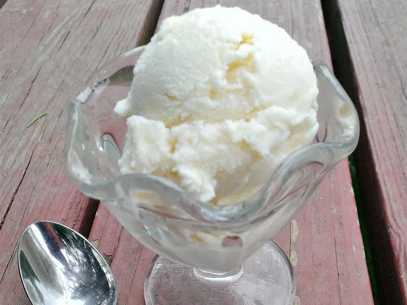

Vanilla ice cream

Description
This homemade ice cream is easy to make with just 4 ingredients: pure vanilla extract, milk, heavy whipping cream, and sugar. This American or Philadelphia-style ice cream makes for a brighter, more pronounced vanilla flavor.
Ingredients
- Milk
- Heavy whipping cream
- Sugar
- Vanilla
Steps
- Cook the milk,cream,and sugar until the sugar has dissolved.
- Transfer the mixture to a measuring cup,then add the vanilla extract.Chill overnight
- Pour the mix into an ice cream maker and churn according to the manufacturer's directions.
- Serve immediately or ripen in the freezer before serving.